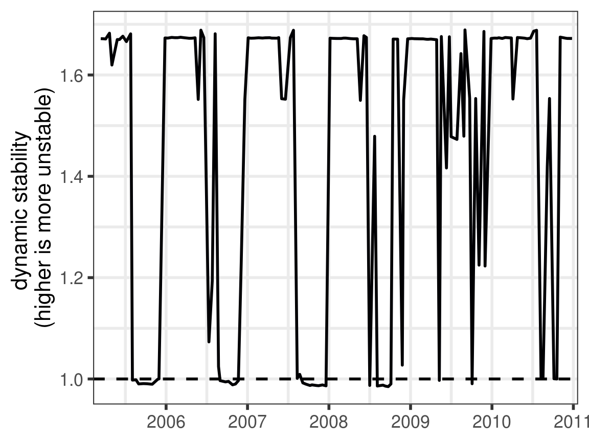
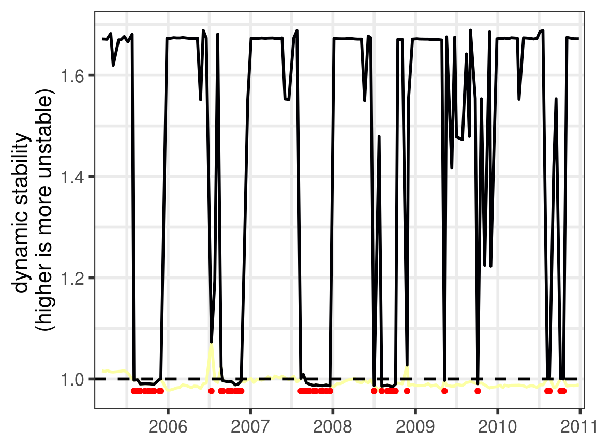
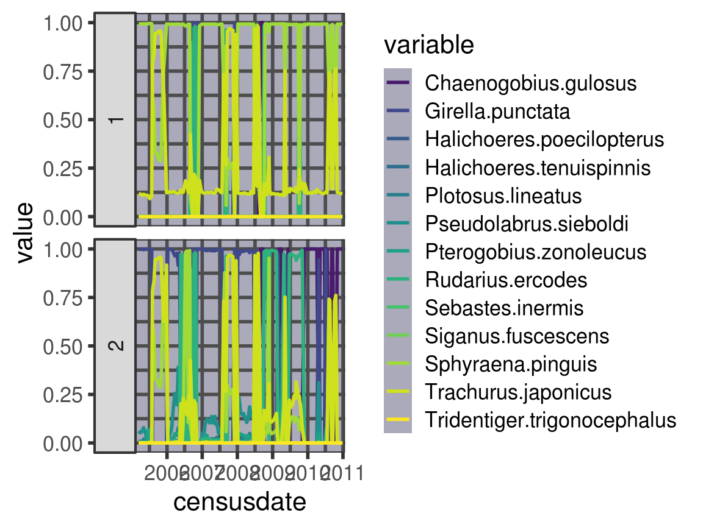

Compute Dynamic Stability for the Maizuru Bay Fish Community
Hao Ye
2019-05-03
Source:vignettes/maizuru-dynamic-stability.Rmd
maizuru-dynamic-stability.RmdIntroduction
This document demonstrates the dynamic stability analysis, using the Maizuru Bay fish community as an example dataset (Ushio et al. 2018).
First, we load the packages that we are going to use, and set the seed (for the random number generation associated with creating surrogate data):
The Data
First, we load in the data and take a look at the time series for the fish populations.
data(maizuru_block)
maizuru_palette <- viridis::viridis(NCOL(maizuru_block) - 1)
names(maizuru_palette) <- sort(names(maizuru_block[, -1]))
x_axis_time <- scale_x_date(limits = as.Date(c("2005-03-01", "2011-01-01")),
date_breaks = "1 year", date_labels = "%Y", expand = c(0.01, 0))
plot_time_series(maizuru_block) +
x_axis_time +
scale_color_manual(values = maizuru_palette) +
guides(color = FALSE)
#> Scale for 'colour' is already present. Adding another scale for
#> 'colour', which will replace the existing scale.
#> Warning: Removed 2175 rows containing missing values (geom_path).
Dynamic Stability Calculations
Perform the dynamic stability analysis for the maizuru system. The steps involved in the full analysis are:
1a. Run simplex projection on each time series to identify the optimal embedding dimension 1b. Generate surrogate time series (here, using the twin-surrogate method)
simplex_results <- compute_simplex(maizuru_block,
E_list = 1:24,
surrogate_method = "twin",
num_surr = 200,
surr_params = list(T_period = 24,
quantile_vec = c(0.875, 0.88, 0.89, 0.90, 0.91, 0.92,
0.93, 0.94, 0.95, 0.85, 0.84, 0.83,
0.82, 0.81, 0.80, 0.96))
)- Run ccm on each pairwise interaction, including the surrogate data, and using the embedding dimension identified previously. Since this takes a while to run, we’ve commented out the actual code, and instead load a pre-generated results file.
# ccm_results <- compute_ccm(simplex_results,
# lib_sizes = c(6, 12, 24, 40, 80, 140, 220, 320, NROW(maizuru_block)),
# num_samples = 200,
# num_cores = 2)
data_path <- system.file("extdata", "maizuru_ccm_results.RDS",
package = "portalDS", mustWork = TRUE)
ccm_results <- readRDS(data_path)- identify the significant interactions by comparing the CCM results for the real time series against the comparable calculations for the surrogate data
- run S-map models for each time series, using the appropriate number of lags, and including the important interacting variables (we rescale the time series to each have mean = 0, variance = 1)
- extract out the s-map coefficients from the models and assemble matrices for the system
smap_matrices <- compute_smap_matrices(smap_coeffs,
ccm_links)
# add date labels for each matrix in list
stopifnot(length(smap_matrices) == NROW(maizuru_block))
names(smap_matrices) <- maizuru_block$censusdate- perform eigen-decomposition on the s-map coefficient matrices
Figures
Interaction Network
First, we look at the interaction network. plot_network has a default layout and palette, but we can specify both. Here, we re-use the viridis color scheme used to plot the time series.
Note that the output of plot_network is a list. The plot element is the ggraph object, which we can plot:

The remaining components allow us to plot a subset of the network, while keeping the same layout of nodes and the associated colors.
halichoeres_links <- ccm_links %>%
filter(stringr::str_detect(lib_column, "Halichoeres") |
stringr::str_detect(target_column, "Halichoeres"))
halichoeres_network <- plot_network(halichoeres_links,
palette = maizuru_palette,
existing_graph = maizuru_network$graph)
print(halichoeres_network$plot)
Eigenvalues
Dynamic stability (Ushio et al. 2018) is defined as the time-varying property that is the largest (absolute value) eigenvalue. With the results of our analysis, we can plot this as a time series, applying the same x-axis transformation as for the population time series earlier:
eigenvalues %>%
plot_eigenvalues() +
x_axis_time
#> Warning: Removed 121 rows containing missing values (geom_path).
Note that plot_eigenvalues has a number of additional parameters, which allow us to plot multiple eigenvalues simultaneously, or identify when the dominant eigenvalue is complex (red points):
eigenvalues %>%
plot_eigenvalues(num_values = 2, highlight_complex = TRUE) +
x_axis_time
#> Warning: Removed 242 rows containing missing values (geom_path).
#> Warning: Removed 221 rows containing missing values (geom_point).
Eigenvectors
Just as with the eigenvalues, we can plot the dominant eigenvector(s) as it changes in time. Note that there are only 13 dimensions here, because we drop the 2 species that share no links with the others.
eigenvectors %>%
plot_eigenvectors(num_values = 2) +
scale_color_manual(values = maizuru_palette) +
x_axis_time
#> Scale for 'colour' is already present. Adding another scale for
#> 'colour', which will replace the existing scale.
#> Scale for 'x' is already present. Adding another scale for 'x', which
#> will replace the existing scale.
#> Warning: Removed 1573 rows containing missing values (geom_path).
References
Ushio, Masayuki, Chih-hao Hsieh, Reiji Masuda, Ethan R Deyle, Hao Ye, Chun-Wei Chang, George Sugihara, and Michio Kondoh. 2018. “Fluctuating Interaction Network and Time-Varying Stability of a Natural Fish Community.” Nature 554 (7692): 360–63. https://doi.org/10.1038/nature25504.